Elektronická učebnica matematiky
Elektronická učebnica matematiky
- Funkcie
- Kombinatorika
Elektronická učebnica matematiky Definícia
Kombinatorika je esenciálnou súčasťou matematiky, ktorá sa venuje rôznym spôsobom organizovania a manipulácie s konečnými množinami. Je to nástroj, ktorý nachádza uplatnenie v mnohých odvetviach matematiky, od teórie čísel až po informatiku a kryptografiu.
Kombinatorika hrá kľúčovú úlohu v analýze a štúdiu grafov. Počet rôznych grafov a výskum ich štruktúr sú dôležité aspekty kombinatoriky v teórii grafov.
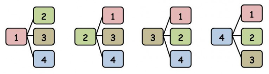Faktoriál
Faktoriál je funkcia, ktorá priradí každému kladnému celému číslu x také číslo, ktoré sa rovná súčinu všetkých čísel menších alebo rovných x.
Napríklad: 5! = 5 * 4 * 3 * 2 * 1 = 120
Alebo: 3! = 3 * 2 * 1 = 6
Kombinácie
Kombinácie sa týkajú výberu prvkov zo sady bez ohľadu na ich poradie. Napríklad, keď vyberáme tímovú zostavu, poradie hráčov nie je dôležité. Kombinačný vzťah pre výber r prvkov zo sady n prvkov je daný vzťahom:
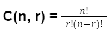Kombinácie s opakovaním
vyberám podmnožiny, prvky sa môžu opakovať
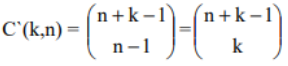Kombinačné číslo
Kombinačné číslo udáva počet kombinícií, teda spôsobov, ako vybrať k prvkov z n prvkovej množiny. Kombinačné čísla sa vyskytujú veľmi
často v kombinatorických výpočtoch, a preto majú špeciálne značenie
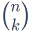 (čítame „n nad k“).
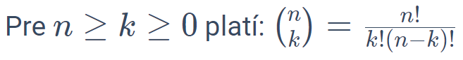
Príklady:
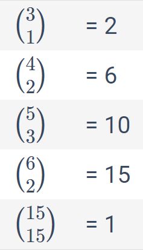Pre kombinačné čísla platí rad ďalších vzťahov, napríklad:
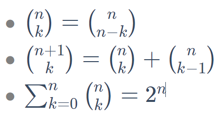
Variácie
Variácie, na druhej strane, zohľadňujú poradie prvkov. Ak napríklad vytvárame postupnosť čísel, poradie je kľúčové. Výpočet variácií pre výber r prvkov zo sady n prvkov je daný vzťahom:
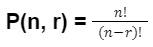Variácie bez opakovania
Variácie s opakovaním
Permutácie bez opakovania
Permutácie s opakovaním
Binomická veta
Binomická veta poskytuje expanziu mocniny binomického výrazu. Jej matematický zápis pre výraz (a+b)n je:
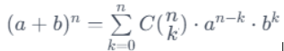taktiež platí:
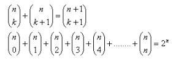Pascalov trojuholník
Pascalov trojuholník je usporiadaný trojuholník čísel, kde každé číslo v trojuholníku je súčet dvoch čísel nad ním v predchádzajúcom riadku. Prvý riadok obsahuje číslo 1, druhý riadok obsahuje čísla 1, 1, tretí riadok obsahuje 1, 2, 1, a tak ďalej.
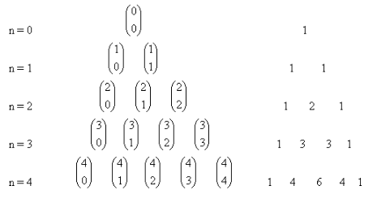